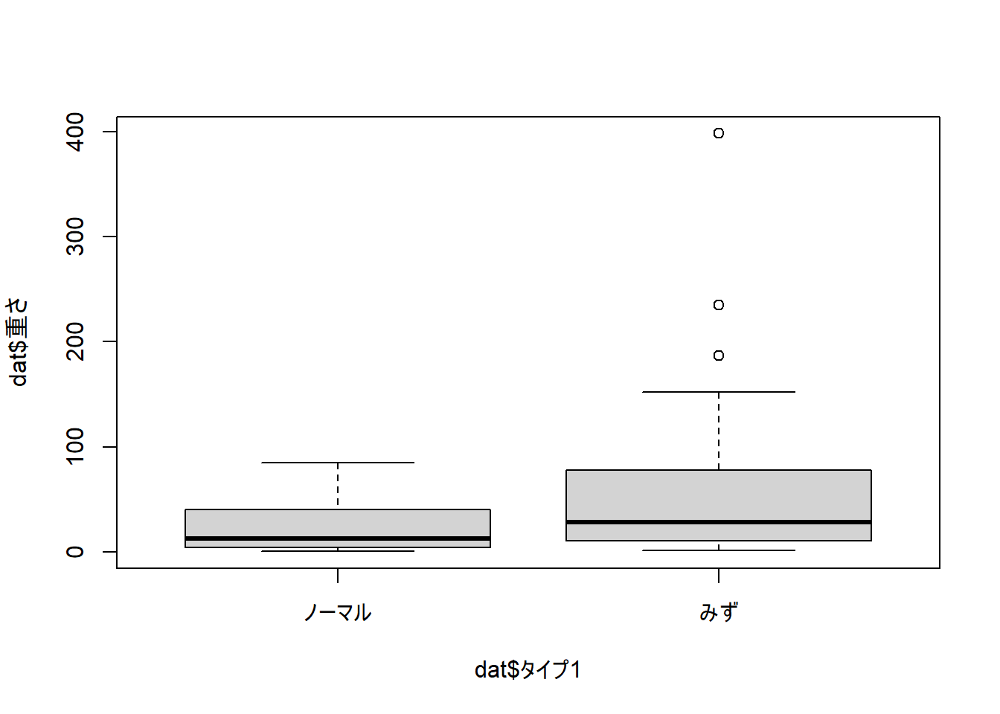

Chapter 9 Week8: 重回帰分析 (2)
9.3 分散分析
9.3.1 t 検定覚えてますか？
2つのデータの平均値の差を t 分布を用いて検定する。
e.g., Aグループの英語テストの平均点 vs. Bグループの英語テストの平均点（対応なし）
e.g., Aグループの英語テストの平均点 vs. Aグループの国語テストの平均点（対応あり）
9.3.2 検定の繰り返し
3つのデータを比較する場合
e.g., Aグループの英語テストの平均点 vs. Bグループの英語テストの平均点 vs. Cグループの英語テストの平均点
グループ間の平均点の差を検定したい
- A vs. B
- A vs. C
- B vs. C
検定における有意水準
検定結果は、5 %（有意水準 5%と設定する場合）の間違いの可能性を含む（第一種の誤り）
- 帰無仮説が真なのに、誤って偽だと主張すること（本当は差がないのに差があると判断する）

検定を繰り返すことの問題
第一種の誤りの確率が当初設定した数値よりも大きくなってしまう
同時に帰無仮説が2つ以上成立する場合に問題となる
上記の例では帰無仮説（「AとBに差はない」 + 「AとCに差はない」 + 「BとCに差はない」）のいずれか一つが棄却されればよい。
1回の検定で帰無仮説が保留される確率 = 95 %（1 - 0.05 (有意水準)）
3回の検定で全て保留される確率 = 0.95 × 0.95 × 0.95 = 0.857 = 86 %
3回の中でいずれか一つが棄却される確率
1 - 0.857 = 0.142 = 約 14%
当初の値の3倍近くまでエラーが膨張！
同じデータに対して複数回検定を行うこともエラー率を高める
- 留学から帰ってきた学生に質問紙（100項目）を配布し、留学前と留学後でどの項目に差がみられるか確認する
\[ 1 - (1 - 0.05)^{100} = 99.4 % \] - 同じ参加者のリーディング、リスニング、スピーキングテストそれぞれに2群の t 検定
「AとBの比較を行う。正規性の確認のために正規分布かを検定し、その後、等分散性を検定でさらに確認し、 t 検定を行った。」も検定の多重性の問題に該当する。この場合、AもBのデータもそれぞれ正規分布に従うという二つの帰無仮説を成立させる必要がある。またいくつかの検定を通過させ、条件（都合）に合う検定を選ぶことにもなる。
9.4 分散分析と回帰分析の関係
前の週では、量的変数による重回帰を扱った。しかし、重回帰分析では、質的変数（e.g., 性別、クラス）同士、量的変数と質的変数などのデータを扱う場合もある。
独立変数が一つ：単回帰分析
独立変数が二つ以上：重回帰分析
独立変数が質的（独立変数の数は関係ない）：分散分析
- 分散分析に、量的変数（共変量）を加える：共分散分析
9.5 分散分析は今回扱いません
9.5.2 理由 2
分散分析よりも自由に分析が行える（理由1に関連している）
分散分析は独立変数として質的変数を仮定するが、実際には量的変数との交互作用を検討したい場面が多い
- 過去の研究を見ると、量的変数を質的変数に変換する手立てが取られたりした（語彙サイズを得点をもとに、閾値を求めて低・中・高にしたり）
後半で扱う一般化線形混合効果モデルでは、様々な確率分布、ランダムな誤差を考慮できる
分散分析と同じような平均値の比較を行うことが可能
- 質的変数のコーディング
分散分析は統計学の教科書であれば必ず登場します。それほど学習する必要性のある内容で、今後説明する回帰モデルでの質的変数の扱いでも、分散分析の考え方を理解しておくと理解しやすいです。しかし、本講義は統計学以外にプログラミング言語の習得まで扱うため、時間的制約があります。そのため、やむを得ずシラバスから削除しました(´;ω;｀)。自分が使わなくても以前の研究を読む際に必要になることもあり得ますよね。
9.6 重回帰分析での質的変数の扱い方
9.6.1 変数のコーディング
指導法A、Bなどの変数はそのまま分析することができない。その為、数値のデータをあてはめて分析を行う（データを変換する）。この手立てを変数を△△コーディングするという。
- 今回扱うコーディングにより、分析結果の係数の数値の意味が異なるため、重回帰分析の肝となる内容である。
言語研究で使われる頻度が高いコーディング法
set.seed(123) # 再現性のための乱数設定
# サンプルサイズ
n <- 20
# 疑似データの作成
df <- data.frame(
ID = 1:n,
Method = factor(rep(c("A", "B", "C"), length.out = n)), # 3つの指導法を割り当て
Score = round(runif(n, min = 50, max = 100), 1) # 50-100の範囲でランダムに得点を生成
)
# データの表示
print(df)## ID Method Score
## 1 1 A 64.4
## 2 2 B 89.4
## 3 3 C 70.4
## 4 4 A 94.2
## 5 5 B 97.0
## 6 6 C 52.3
## 7 7 A 76.4
## 8 8 B 94.6
## 9 9 C 77.6
## 10 10 A 72.8
## 11 11 B 97.8
## 12 12 C 72.7
## 13 13 A 83.9
## 14 14 B 78.6
## 15 15 C 55.1
## 16 16 A 95.0
## 17 17 B 62.3
## 18 18 C 52.1
## 19 19 A 66.4
## 20 20 B 97.7トリートメント・コントラスト（treatment contrasts）
別名ダミーコーディング
基準のグループと、それ以外の各グループを比較
contr.treatment(水準数)関数（statsパッケージ）
指導法Aが基準となる（0）
- 指導法AとB、指導法AとCの比較
## [1] A B C A B C A B C A B C A B C A B C A B
## attr(,"contrasts")
## 2 3
## A 0 0
## B 1 0
## C 0 1
## Levels: A B C係数の方向（正/負）も重要
切片：基準の指導法Aの平均値
Method 2: 指導法B - 指導法A
Method 3: 指導法C - 指導法A
## (Intercept) Method2 Method3
## 79.014286 9.185714 -15.647619## Method Score
## 1 A 79.01429
## 2 B 88.20000
## 3 C 63.36667サム・コントラスト（sum contrasts）
全グループの平均の平均値（GM: grand mean）と1が割り当てられたデータを比較
contr.sum(水準数)関数（statsパッケージ）
指導法Cが比較から除外（0）
- 指導法Aと全体平均、指導法Bと全体平均の比較
## [1] A B C A B C A B C A B C A B C A B C A B
## attr(,"contrasts")
## [,1] [,2]
## A 1 0
## B 0 1
## C -1 -1
## Levels: A B C係数の方向（正/負）も重要
切片： GM
Method 1: 指導法A - GM
Method 2: 指導法B - GM
## (Intercept) Method1 Method2
## 76.860317 2.153968 11.339683## [1] 76.86032反復コントラスト（repeated contrasts）
隣接する2つのグループを比較する
上・中・下の場合、上 vs. 中、中 vs. 下
contr.sdif(水準数)関数（MASSパッケージ）
##
## Attaching package: 'MASS'## The following object is masked from 'package:olsrr':
##
## cement## The following object is masked from 'package:sm':
##
## muscle## The following object is masked from 'package:patchwork':
##
## area## The following object is masked from 'package:dplyr':
##
## select- 指導法Aと指導法B、指導法Bと指導法Cの比較
## [1] A B C A B C A B C A B C A B C A B C A B
## attr(,"contrasts")
## 2-1 3-2
## A -0.6666667 -0.3333333
## B 0.3333333 -0.3333333
## C 0.3333333 0.6666667
## Levels: A B C- 分数表示
## [1] A B C A B C A B C A B C A B C A B C A B
## attr(,"contrasts")
## 2-1 3-2
## A -2/3 -1/3
## B 1/3 -1/3
## C 1/3 2/3
## Levels: A B C係数の方向（正/負）も重要
切片： GM
Method 2-1: 指導法B - 指導法A
Method 3-2: 指導法C - 指導法B
## (Intercept) Method2-1 Method3-2
## 76.860317 9.185714 -24.833333- 全体のコーディングの比較
| Treatment | Sum | Repeat | ||||
|---|---|---|---|---|---|---|
| Predictors | Estimates | p | Estimates | p | Estimates | p |
| (Intercept) | 79.01 | <0.001 | 76.86 | <0.001 | 76.86 | <0.001 |
| Method [2] | 9.19 | 0.187 | 11.34 | 0.010 | ||
| Method [3] | -15.65 | 0.038 | ||||
| Method [1] | 2.15 | 0.589 | ||||
| Method2-1 | 9.19 | 0.187 | ||||
| Method3-2 | -24.83 | 0.002 | ||||
| Observations | 20 | 20 | 20 | |||
| R2 / R2 adjusted | 0.432 / 0.365 | 0.432 / 0.365 | 0.432 / 0.365 | |||
他にも多項コントラスト、ヘルムートコントラストなど
変数の順番を並び替える方法
factor()関数を使う
- 研究課題に合わせてコーディング法を選ぶ必要があり、またどのコーディングを使用したか、どの数値をどのデータにあてはめたのかを報告する必要がある。
- 参加者内/参加者間のデータかは関係ない。
- 以上のどのコーディング法でも、水準数 - 1が計算される
9.7 ハンズオン・セッション
- ポケモンのデータセットの中身を減らしたもの
## New names:
## Rows: 46 Columns: 17
## ── Column specification
## ───────────────────────────────────────────────────────────────────────────────────────
## Delimiter: "," chr (3): 名前, タイプ1, 画像URL dbl (14): ...1, id, 高さ, 重さ, 世代, ステータス, HP, こうげき,
## ぼうぎょ, とくこう, とくぼう, すばやさ, 捕まえ...
## ℹ Use `spec()` to retrieve the full column specification for this data. ℹ Specify the column types or set
## `show_col_types = FALSE` to quiet this message.
## • `` -> `...1`9.7.1 データの概要
今回は、重さ、タイプ1、世代の三つに関心があると仮定する
データ構造の分かりやすさを優先しており、モデル自体の妥当性は考慮していないことに注意
## # A tibble: 5 × 17
## ...1 id 名前 タイプ1 高さ 重さ 世代 ステータス HP こうげき ぼうぎょ
## <dbl> <dbl> <chr> <chr> <dbl> <dbl> <dbl> <dbl> <dbl> <dbl> <dbl>
## 1 1 7 ゼニガメ… みず 0.5 9 1 314 44 48 65
## 2 2 55 ゴルダッ… みず 1.7 76.6 1 500 80 82 78
## 3 3 61 ニョロゾ… みず 1 20 1 385 65 65 65
## 4 4 73 ドククラ… みず 1.6 55 1 515 80 70 65
## 5 5 79 ヤドン…… みず 1.2 36 1 315 90 65 65
## # ℹ 6 more variables: とくこう <dbl>, とくぼう <dbl>, すばやさ <dbl>,
## # 捕まえやすさ <dbl>, 進化 <dbl>, 画像URL <chr>## vars n mean sd median trimmed mad min max range skew kurtosis se
## X1 1 46 47.32 72.65 25.7 31.56 28.84 0.8 398 397.2 3 10.25 10.71##
## ノーマル みず
## 22 24
## タイプ1 重さ
## 1 ノーマル 25.11818
## 2 みず 67.67500##
## 1 2 3
## 17 12 17## 世代 重さ
## 1 1 52.37059
## 2 2 48.25833
## 3 3 41.611769.7.2 2水準のコーディング
世代間の重さの比較をトリートメントコントラストコーディングで検討
トリートメントコントラスト
- ノーマルタイプを基準にする
水準の順番を確認
## [1] みず みず みず みず みず みず みず みず
## [9] みず みず みず みず みず みず みず みず
## [17] みず みず みず みず みず みず みず みず
## [25] ノーマル ノーマル ノーマル ノーマル ノーマル ノーマル ノーマル ノーマル
## [33] ノーマル ノーマル ノーマル ノーマル ノーマル ノーマル ノーマル ノーマル
## [41] ノーマル ノーマル ノーマル ノーマル ノーマル ノーマル
## Levels: ノーマル みず- コーディングする際は、Factor型になっている必要がある
## [1] "character"- Factor型に変更する
## [1] "factor"- トリートメントコントラストコーディングを実施
- ノーマルが基準となっている
## 2
## ノーマル 0
## みず 1- (単)回帰分析の実施
- みずタイプポケモンの方が、平均して42.56kg ノーマルポケモンよりも重いこと。
##
## Call:
## lm(formula = 重さ ~ タイプ1, data = dat)
##
## Residuals:
## Min 1Q Median 3Q Max
## -65.77 -39.55 -18.87 14.76 330.33
##
## Coefficients:
## Estimate Std. Error t value Pr(>|t|)
## (Intercept) 25.12 14.96 1.679 0.1003
## タイプ12 42.56 20.72 2.054 0.0459 *
## ---
## Signif. codes: 0 '***' 0.001 '**' 0.01 '*' 0.05 '.' 0.1 ' ' 1
##
## Residual standard error: 70.18 on 44 degrees of freedom
## Multiple R-squared: 0.08752, Adjusted R-squared: 0.06678
## F-statistic: 4.22 on 1 and 44 DF, p-value: 0.04592- 報告の例
ポケモンの重さを、ポケモンのタイプでどの程度予測できるかを調査するため、回帰分析を行った。その結果、ポケモンのタイプは重さを統計的有意に予測していた。しかし、決定係数の値は8.8%、調整済決定係数は6.7%と予測力は大きくなかった。トリートメントコントラストコーディングでノーマルタイプを基準に（ノーマル = 0、みず = 1）比較すると、みずタイプのポケモンはノーマルタイプのポケモンよりも42.56 kg平均して重いことが予想される。
9.7.3 3水準のコーディング
- 反復コントラストコーディングで世代間の重さを比較
## 2-1 3-2
## 1 -2/3 -1/3
## 2 1/3 -1/3
## 3 1/3 2/3- （単）回帰分析
##
## Call:
## lm(formula = 重さ ~ 世代, data = dat)
##
## Residuals:
## Min 1Q Median 3Q Max
## -50.57 -39.24 -18.99 1.69 356.39
##
## Coefficients:
## Estimate Std. Error t value Pr(>|t|)
## (Intercept) 47.414 11.083 4.278 0.000103 ***
## 世代2-1 -4.112 27.963 -0.147 0.883773
## 世代3-2 -6.647 27.963 -0.238 0.813252
## ---
## Signif. codes: 0 '***' 0.001 '**' 0.01 '*' 0.05 '.' 0.1 ' ' 1
##
## Residual standard error: 74.17 on 43 degrees of freedom
## Multiple R-squared: 0.004202, Adjusted R-squared: -0.04211
## F-statistic: 0.09073 on 2 and 43 DF, p-value: 0.9134- 世代1と3を比較するためコーディングを変更
## 3 2
## 1 0 0
## 3 1 0
## 2 0 1世代2-1：世代3 - 世代1
世代3-2：世代2 - 世代3
##
## Call:
## lm(formula = 重さ ~ 世代, data = dat)
##
## Residuals:
## Min 1Q Median 3Q Max
## -50.57 -39.24 -18.99 1.69 356.39
##
## Coefficients:
## Estimate Std. Error t value Pr(>|t|)
## (Intercept) 47.414 11.083 4.278 0.000103 ***
## 世代2-1 -10.759 25.439 -0.423 0.674455
## 世代3-2 6.647 27.963 0.238 0.813252
## ---
## Signif. codes: 0 '***' 0.001 '**' 0.01 '*' 0.05 '.' 0.1 ' ' 1
##
## Residual standard error: 74.17 on 43 degrees of freedom
## Multiple R-squared: 0.004202, Adjusted R-squared: -0.04211
## F-statistic: 0.09073 on 2 and 43 DF, p-value: 0.9134- 報告の例
ポケモンの重さを、ポケモンの世代でどの程度予測できるかを調査するため、回帰分析を行った。その結果、ポケモンの世代は重さを統計的有意に予測していなかった。しかし、決定係数の値は0.42%、調整済決定係数はマイナスの値を示していた。さらに、F 検定に有意差は見られなかった。世代間の比較においても、有意差がみられるペアはなかった。
9.8 検定の繰り返し問題アゲイン
- t 検定から分散分析の接続で取り上げたりしますが、 t 検定に限った話ではなく、これから先の分析でも、帰無仮説と付き合うのであれば、向き合っていく必要のあるテーマです。常に意識しましょう。
9.8.1 重回帰分析における検定
検定の多重性は、第一種の過誤を高めてしまうことが問題
重回帰分析で使用される検定として二つある（モデル比較の際にはさらに検定を行う）
モデル全体: F 検定
- 回帰モデル自体の有意性を検定。帰無仮説「すべての偏回帰係数がゼロ」
各係数
各係数は t 値をもとに検定が行われている
- 2水準と3水準では、係数の数がそれぞれ1と2となり、水準が増えるほど検定を繰り返すことになる
同じ参加者に対し、英語と日本語で実験を行い、言語別のデータセットを作成。それらに重回帰分析を行うと、検定を繰り返していることになります。この場合、モデルに言語変数を入れ、下位検定で多重比較を行って言語ごとの影響を確認します。
各係数での検定の繰り返しの問題は、この分野ではあまり問題にされることが少ないと思います。しかし、シミュレーションを行うと、係数の p 値がインフレするのを確認できるのも事実です。
9.9 解決策
9.9.1 p 値の補正
p_adjust()関数lm()関数で作成したモデルを使用する。- 補正法： Romano-Wolf stepdown（初期値）, Bonferroni, Bonferroni-Holm, and Benjamini-Hochberg corrections, etc…
## Warning: package 'hdm' was built under R version 4.3.3- 補正後
## (Intercept) Method1 Method2
## 0.000000000000004800219 1.000000000000000000000 0.029708515524948679587- 補正前
## (Intercept) Method1 Method2
## 0.000000000000001600073 0.588539274664316103269 0.009902838508316226529- 補正では第2種の誤りが大きくなるのを防げないというシミュレーション結果もある
9.9.2 ベイズ統計
検定の繰り返しは、帰無仮説検定を行う頻度統計における問題。
- 以前使用した
brm()関数を使用。
- 以前使用した
## Loading 'brms' package (version 2.20.4). Useful instructions
## can be found by typing help('brms'). A more detailed introduction
## to the package is available through vignette('brms_overview').##
## Attaching package: 'brms'## The following objects are masked from 'package:rstanarm':
##
## dirichlet, exponential, get_y, lasso, ngrps## The following object is masked from 'package:psych':
##
## cs## The following object is masked from 'package:stats':
##
## arresults_sum_bayes <- brm(
重さ ~ タイプ1, # 応答変数「重さ」と説明変数「タイプ1」の回帰モデル
data = dat, # データフレーム dat を使用
family = gaussian(), # 正規分布（ガウス分布）を仮定
prior = prior(normal(0, 10)), # 事前分布として平均0、標準偏差10の正規分布を設定
chains = 4, # MCMCの独立した4つのチェーンを使用
iter = 5000, # 総サンプリング回数（各チェーンあたり5000回）
warmup = 500, # ウォームアップ（バーンイン）期間として最初の500回を破棄
thin = 2, # 2回ごとに1つのサンプルを取得（間引き）
seed = 123, # 乱数シードを設定し、再現性を確保
refresh = 0
)## Compiling Stan program...## Start sampling## Family: gaussian
## Links: mu = identity; sigma = identity
## Formula: 重さ ~ タイプ1
## Data: dat (Number of observations: 46)
## Draws: 4 chains, each with iter = 5000; warmup = 500; thin = 2;
## total post-warmup draws = 9000
##
## Population-Level Effects:
## Estimate Est.Error l-95% CI u-95% CI Rhat Bulk_ESS Tail_ESS
## Intercept 44.17 9.96 24.97 63.71 1.00 8205 8555
## タイプ11 -10.21 7.28 -24.50 4.07 1.00 8493 8029
##
## Family Specific Parameters:
## Estimate Est.Error l-95% CI u-95% CI Rhat Bulk_ESS Tail_ESS
## sigma 70.50 7.49 57.58 86.81 1.00 8154 7938
##
## Draws were sampled using sampling(NUTS). For each parameter, Bulk_ESS
## and Tail_ESS are effective sample size measures, and Rhat is the potential
## scale reduction factor on split chains (at convergence, Rhat = 1).9.10 次週までの課題
9.11 参考文献
平井 et al.
外国語教育ハンドブック
南風原
https://home.hirosaki-u.ac.jp/pteiki/r/3pecification/multiplecomp/
Plonsky, L., & Oswald, F. L. (2017). Multiple regression as a flexible alternative to ANOVA in L2 research. Studies in Second Language Acquisition, 39(3), 579-592.
水本篤. (2009). 複数の項目やテストにおける検定の多重性: モンテカルロ・シミュレーションによる検証. 外国語教育メディア学会機関誌, 46, 1-19.
小島ますみ（2022）. 外国語教育研究における（一般化）線形混合モデル：仮説に適したコーディング・モデリングを中心に The 2021 Annual Conference on Vocabulary Acquisition